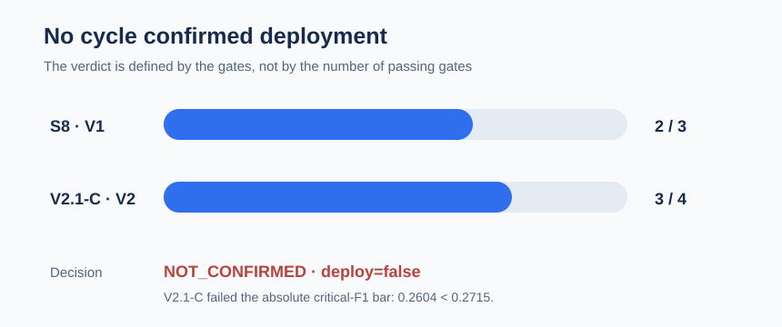
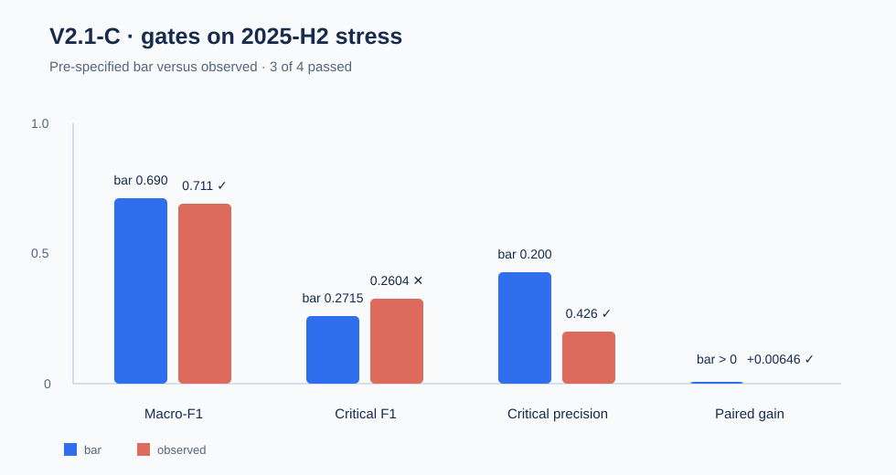

Confirm honestly before promoting
A CFPB complaint-routing study with a rare critical class, sealed temporal partitions and pre-specified gates. The defensible deliverable is non-confirmation evidence — not a model ready to serve.
17.1 million rows · 9 modeled families · 13 notebook pairs · two confirmatory openings
The question is whether the gain survives the future
The project routes CFPB complaint narratives to historical product families. The critical class, debt_credit_management, is only 5,437 narratives in 3.8 million. Complaint volume is not market prevalence or a measure of consumer harm.
Result: S8 and V2.1-C returned NOT_CONFIRMED; neither cycle authorizes deployment.
Sealed windows prevent retrospective wins
The protocol separates development, validation, test, stress and monitor. Group identity prevents a normalized complaint from crossing partitions. The scientific view uses clean, novel representatives; the operational view is secondary and cannot change decisions.

Windows and status
train: development.validation: development, consumed by V2.test: consumed by S8.stress: consumed by V2.1-C.monitor: remains sealed.
The failed gate defines the decision
In V2.1-C, macro-F1 (0.710748), critical precision (0.426070) and paired gain (+0.006455) passed. Critical F1 was 0.260404, below the absolute bar of 0.2715. Therefore, 3 of 4 does not mean confirmed.

Correct reading: the positive paired gain over control is diagnostic, but insufficient to clear the frozen confirmatory rule.
Logic lives in src/; notebooks orchestrate
The project keeps contracts, runners, reports and manifests separate from the narrative. PT-BR/EN-US pairs share the same audited logic; PT-BR is the editorial reference edition.
Shared layers
data.py,audit.py,taxonomy.pyanddeduplication.py.temporal_split.pyfor groups and partitions.- S3–S8, V2 and frozen-package runners.
Predictor,PredictionBatchandArtifactManifestcontracts.
Technical governance
- Aggregates only; narratives and individual scores are not persisted.
- Manifests carry protocol, artifact and result hashes.
- Exact-reproduction gates protect the measured object.
- MLflow is optional and stays in orchestration.
Permitted use and boundaries
It can support
- Protocol audits and confirmatory evaluation.
- Learning about temporal drift and rare classes.
- Designing a new study on partitions not yet consumed.
It cannot support
- Serving any model as a confirmed system.
- Reopening the S8 or V2.1-C verdicts.
- Opening the 2026
monitorpartition in this cycle.
Decision boundary: deployment_authorized=false. This is a study and audit artifact, not an operational recommendation.
Sources and reproduction
This report is a communication layer. Frozen protocols, modular code, tests and versioned manifests remain the technical source of truth.